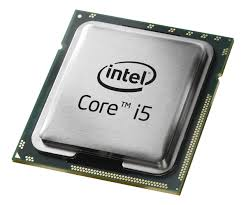

Procesador (CPU)
Definición: Es el cerebro de la computadora, encargado de ejecutar instrucciones y procesar datos.
Funcion: Ejecuta programas, realiza cálculos complejos y coordina el funcionamiento de los demás componentes.
Tipos: Intel (Core i3, i5, i7, i9), AMD (Ryzen 3, 5, 7, 9).
Cuidados: Mantenerlo fresco con disipador y ventilador adecuados; aplicar correctamente la pasta térmica; evitar sobrecargar la CPU con programas pesados sin ventilación suficiente.
